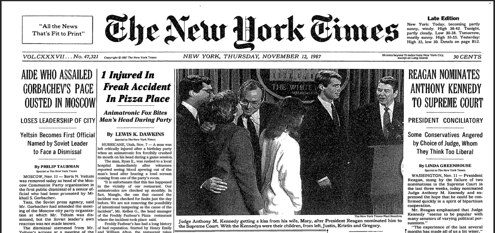

Archived newspapers articles (physical and digtal) obtained from Universe 087's InterNet
Index not found!
| ID | Date Published | Source | Type | Related Information | Link |
| NWS-87-J1OD | November 12, 1987 | The New York Times | Physical |
Headline: 1 Injured In Freak Accident in Pizza Place Subheadline: Animatronic Fox Bites Man's Head During Party |
 |
Index not found!
Index not found!
Index not found!
Index not found!
Index not found!
WARNING: All items, documents (either physical or digital)
produced by the Department, including this web-site, is classified under
"Secret" material. All unauthorized disclosure will result in a fine of
$2,500,000 and a prison sentence of up to 50 years.
© 1983 Department of Trans-Universal and Temporal
Communication
This is a FAKE parody website that is part of a series which dives into the question: "What if Five Nights at Freddy's was real?". Based on the design of old U.S. government websites from the 90s. Credits